- 00 开篇词 打破四大认知局限，进阶高级性能工程师.md.html
- 01 性能工程：为什么很多性能测试人员无法对性能结果负责？.md.html
- 02 关键概念：性能指标和场景的确定.md.html
- 03 核心分析逻辑：所有的性能分析，靠这七步都能搞定.md.html
- 04 如何构建性能分析决策树和查找瓶颈证据链？.md.html
- 05 性能方案：你的方案是否还停留在形式上？.md.html
- 06 如何抽取出符合真实业务场景的业务模型？.md.html
- 07 性能场景的数据到底应该做成什么样子？.md.html
- 08 并发、在线和TPS到底是什么关系？.md.html
- 09 如何设计全局和定向监控策略？.md.html
- 10 设计基准场景需要注意哪些关键点？.md.html
- 11 打开首页之一：一个案例，带你搞懂基础硬件设施的性能问题.md.html
- 12 打开首页之二：如何平衡利用硬件资源？.md.html
- 13 用户登录：怎么判断线程中的Block原因？.md.html
- 14 用户信息查询：如何解决网络软中断瓶颈问题？.md.html
- 15 查询商品：资源不足有哪些性能表现？.md.html
- 16 商品加入购物车：SQL优化和压力工具中的参数分析.md.html
- 17 查询购物车：为什么铺底参数一定要符合真实业务特性？.md.html
- 18 购物车信息确定订单：为什么动态参数化逻辑非常重要？.md.html
- 19 生成订单信息之一：应用JDBC池优化和内存溢出分析.md.html
- 20 生成订单信息之二：业务逻辑复杂，怎么做性能优化？.md.html
- 21 支付前查询订单列表：如何分析优化一个固定的技术组件？.md.html
- 22 支付订单信息：如何高效解决for循环产生的内存溢出？.md.html
- 23 决定容量场景成败的关键因素有哪些？.md.html
- 24 容量场景之一：索引优化和Kubernetes资源分配不均衡怎么办？.md.html
- 25 容量场景之二：缓存对性能会有什么样的影响？.md.html
- 26 稳定性场景之一：怎样搞定业务积累量产生的瓶颈问题？.md.html
- 27 稳定性场景之二：怎样搞定磁盘不足产生的瓶颈问题？.md.html
- 28 如何确定异常场景的范围和设计逻辑？.md.html
- 29 异常场景：如何模拟不同组件层级的异常？.md.html
- 30 如何确定生产系统配置？.md.html
- 31 怎么写出有价值的性能报告？.md.html
- 我们这个课程的系统是怎么搭建起来的？.md.html
- 结束语 做真正的性能项目.md.html
- 捐赠
26 稳定性场景之一：怎样搞定业务积累量产生的瓶颈问题？
你好，我是高楼。
根据我们的RESAR性能理论，在执行完基准场景、容量场景之后，接下来就是稳定性场景了。
做过性能项目的工程师应该都有一个感觉：在跑稳定性场景之前，内心是战战兢兢的，因为不知道在运行长时间之后，系统会是什么样的表现。
并且，还有一个复杂的地方就是，在稳定性场景中，由于运行的时间长，出现问题后，我们分析起来会比较困难，主要有三点原因：
（1）分析一定要有完整且持续的计数器监控。因为在稳定性场景中，实时查看性能计数器是不现实的，我们不可能一直盯着。而且，问题出现的时间点也不确定。所以，在分析问题时，我们需要完整且持续的计数器监控。
（2）累积业务量产生的问题点在整个系统中也是不确定的。
（3）你知道，稳定性场景回归比较耗时，在分析优化的过程中，但凡调个参数、改行代码啥的，总是要回归场景的，而把稳定性场景拉起来就需要几个小时。所以，稳定性场景中的优化动作即便看似简单，也会消耗比较长的时间。
基于这几点原因，我们在稳定性运行之前，一定要想好监控哪些计数器，避免在稳定性运行过程中遇到问题时，发现没有可用的计数器分析问题，那就悲催了。这是极有可能出现的情况，你要格外注意。
根据第9讲中提到的监控逻辑，在执行我们稳定性场景前，我们已经按“组件 - 模块 - 计数器”这样的逻辑罗列了所有需要监控的计数器，并且也用相应的工具去实现了。一切看起来已经万事具备。下面我们来看看在执行稳定性场景时，有哪些要点需要注意？
稳定性场景的要点
在稳定性场景中，有两点是需要你着重关注的：一个是运行时长，另一个是压力量级。
1. 运行时长
我们在前面提到，容量场景是为了看系统所能承受的最大容量，而稳定性场景主要看的是系统提供长时间服务时的性能稳定性，观察系统在长时间运行过程中出现的累积效应。因此，运行时长就是稳定性场景中非常重要的一个指标了。
在每个业务系统中，稳定性运行时长都不是固定的，这取决于业务系统的具体应用场景。
对于大部分长年不能宕机的系统来说，它们靠的不是系统中的所有节点都能长年运行，而是架构设计可以在任一节点出现问题之后，将对应的业务承接到其他节点上。而这些架构设计就涉及到了DNS分区、扩展能力、高可用能力等技术。
可是，对于我们性能项目来说，即便是长年不宕机的系统，稳定性场景也不可能长年运行。因为如果这样做，就相当于长年运行着另一个生产系统，成本高、维护难，这显然是非常不现实的。
这时候，另一个岗位的重要性就体现出来了，那就是：运维。
在运维的职责里，就有“处理生产环境中出现的各种问题”这一项，我们俗称背锅侠。运维要做的就是保障系统在各种场景下都要正常运行。不过我想多啰嗦几句，要保证这一点，就不能只靠运维岗的工程师，它需要一个企业中所有技术岗的通力合作。换句话说，运维的职责实际上应该由一个企业的所有技术人员来承担。
话说回来，我们知道，运维会制定各种工作内容来保障系统的正常运行，其中，非常重要的一项就是，搭建完善的监控系统，因为你让一个运维眼睛都不眨眼地盯着系统是不现实的。而我们这个课程中提到的全局监控和定向监控，就可以完全覆盖到这种监控系统的要求。
为什么要提到运维呢？
因为稳定性场景的运行时长，不能覆盖长年运行的系统，这就需要运维人员来保障那线上的稳定性状态了。总体来看，运维有两大类工作内容：一类是日常巡检（用手工或自动化的方式，查看系统的健康状态）；另一类是运维动作（用手工或自动化的方式，完成归档、日志清理等动作）。
有些系统有固定的运维周期，周期按照天、周或者月来计算。而有些系统是没有固定的运维周期的，这就要靠监控系统提供的信息来判断什么时候做运维动作了。在自动化运维比较完善的情况下，有些运维动作就由自动化系统承接了；在自动化运维不完善的情况下，就只能靠人了。
不过，不管有没有自动化运维，每个系统都是有运维周期的，像下面这样：
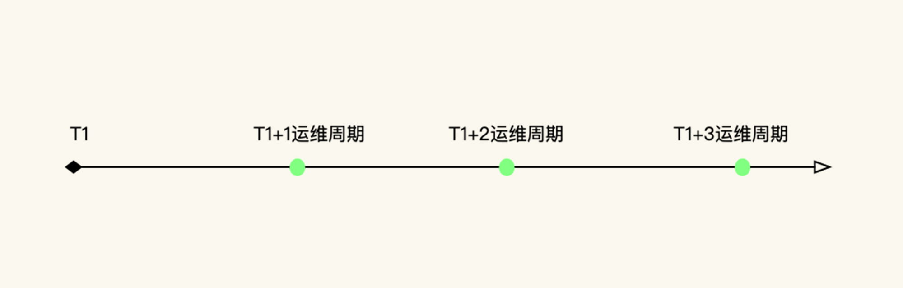
下面我们具体来看看，对于上述两种系统，怎么计算稳定性场景的运行时长。
- 有固定运维周期的系统
对于有固定运维周期的系统，稳定性场景的运行时长就比较容易定义了。我们先根据生产系统的数据统计，看一下系统在固定的运维周期内，最大的业务容量是多少。
假设你根据生产系统统计出，在之前的运维周期中，有1亿的业务容量，而在容量场景中得到的最大TPS有1000。那么，我们就可以通过下面这个公式来计算：
\[ 稳定性运行时长 = 1亿(业务累积量) \\div 1000(TPS) \\div 3600(秒) \\approx 28(小时) \]
用这种方式得出的稳定性运行时长，对于有固定运维周期的系统来说已经足够了。
- 没有固定运维周期的系统
对于没有固定运维周期的系的系统，该怎么办呢？也许有人会说，运行时间只有尽可能长了。但是，“尽可能”也得有一个界限。根据我的经验，我们不能用“尽可能”来判断稳定性场景的运行时长。
根据上面的运算公式，TPS来自于容量场景，时间是最大的变量，所以业务累积累是不确定的。现在，我们要做的就是把业务累积量确定下来。
我们知道，业务积累量需要根据历史业务的统计数据来做决定。如果你的系统一个月有1000万的业务累积量，同时，稳定性运行的指标是稳定运行三个月（也就是说，即便没有固定的运维周期，我们也得给出一个时间长度）：- 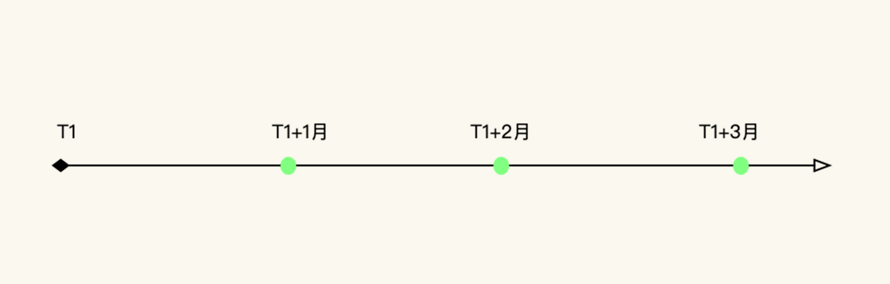
那么，总业务累积量就是3000万。
我们再根据上面的公式来计算就可以了：
\[ 稳定性运行时长 = 3000万(业务累积量) \\div 1000(TPS) \\div 3600(秒) \\approx 8(小时) \]
总之，不管是什么样的系统，要想运行稳定性场景，都得确定一个业务累积量。
2. 压力量级
我们再来看压力量级，这是稳定性场景中必须要确定的另一个前提条件。
我们在网上经常能看到这样的说法：稳定性的压力应该用最大TPS的80%来运行。可是，我们来看一下稳定性场景的目标：保障系统的业务累积量。也就是说，我们只要保证这一目标就可以了，至于TPS是多少，并不重要。
因此，我们不用考虑80%的问题，直接用最大TPS来运行即可。一个系统如果能在最大TPS的状态下正常运行，才算是真正经受住了考验。
你可能会有这样的疑问：当一个系统在最大TPS状态下运行，如果有突增的压力需要更高的TPS怎么办？请你注意，稳定性场景不是为了解决突增的压力峰值而设计的。如果你要考虑突增的业务压力，我建议你增加容量场景来验证。
另外，如果我们要对付突增的业务容量，不止要在性能场景中考虑增加容量场景，还要在架构设计时，把相应的限流、熔断、降级等异常保障机制加进来。
到这里，我们就把两个重要的稳定性条件讲完了。
下面我们具体操作一下，以我们这个课程的电商系统为例，看看稳定性场景该怎么确定。
场景运行数据
因为这是一个示例系统，所以我们先定一个小目标：稳定运行业务累积量为5000万。
对于这个系统，我们在容量场景中得到的最大TPS在1700，但是随着容量场景的不断增加，数据库中的数据量越来越大，TPS也会慢慢降低，因为我并没有做数据库的容量限制和归档等动作。那我们就用容量场景中的相应的压力线程来运行稳定性场景，让我们的理论能在落地时得到印证。根据前面的计算公式，运行时长为：
\[ 稳定性运行时长 = 5000万 \\div 1700(TPS) \\div 3600(秒) \\approx 8.16(小时) \]
也就是说我们要运行稳定性场景8个小时多一点。
下面我们来看一下具体的运行数据：
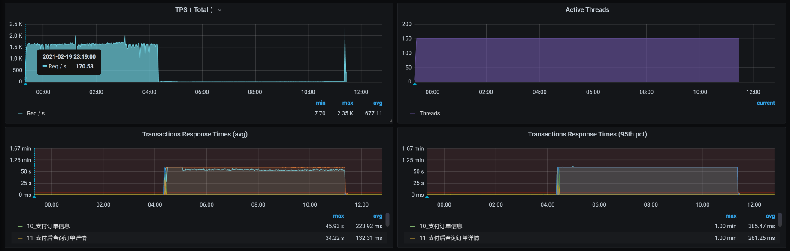
从数据上来看，在稳定性场景运行4个多小时的时候，TPS就没了，响应时间又非常高，这明显是出现问题了。
这时候的业务积累量为：
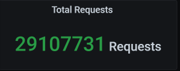
总的业务累积量是2900多万，这和我们的预期并不相符。
下面我们分析一下到底是怎么回事。
全局监控分析
按照我们一贯的性能分析逻辑，我们先来查看全局监控数据：
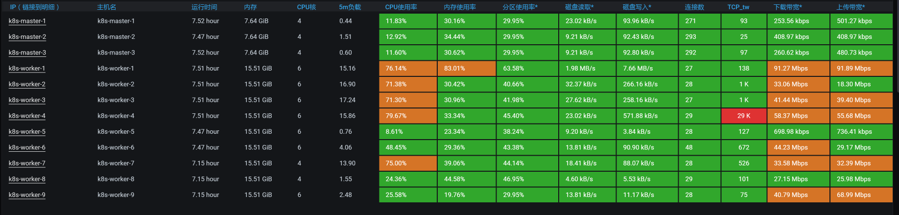
你看，在运行期间，好几个worker的CPU资源都在70%以上，这样的数据中规中矩，还不是我们关注的重点。因为对于稳定性场景来说，资源只要能撑得住就行了。
但是，在场景运行数据中，TPS直接就断掉了。在我查看每个主机的资源情况时，在worker-1上看到了这样的数据：
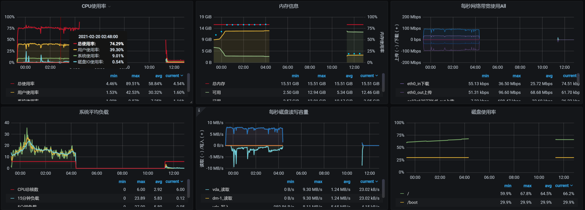
这是数据断掉了呀！那我们就要定向分析这个主机了。
定向监控分析
定向分析第一阶段
根据断掉的时间点，和我们前面使用的监控手段，一层层查（这个步骤就是把我们的项目级全局监控计数器看一遍，在第4讲中已经有了明确的说明，我这里不再赘述了），结果看到了这样的日志信息：
Feb 20 04:20:41 hp-server kernel: Out of memory: Kill process 7569 (qemu-kvm) score 256 or sacrifice child
Feb 20 04:20:41 hp-server kernel: Killed process 7569 (qemu-kvm), UID 107, total-vm:18283204kB, anon-rss:16804564kB, file-rss:232kB, shmem-rss:16kB
Feb 20 04:20:44 hp-server kernel: br0: port 4(vnet2) entered disabled state
Feb 20 04:20:44 hp-server kernel: device vnet2 left promiscuous mode
Feb 20 04:20:44 hp-server kernel: br0: port 4(vnet2) entered disabled state
Feb 20 04:20:44 hp-server libvirtd: 2021-02-19 20:20:44.706+0000: 1397: error : qemuMonitorIO:718 : 内部错误：End of file from qemu monitor
Feb 20 04:20:44 hp-server libvirtd: 2021-02-19 20:20:44.740+0000: 1397: error : qemuAgentIO:598 : 内部错误：End of file from agent monitor
Feb 20 04:20:45 hp-server systemd-machined: Machine qemu-3-vm-k8s-worker-1 terminated.
显然，因为宿主机内存不够，worker-1被直接杀掉了。既然是内存不足，我们肯定要确定一下这个宿主机是为什么内存不足了。
我检查了宿主机的overcommit参数。这个参数是确定操作系统是否允许超分内存的。对于Linux来说，内存分配出去，不一定会被用完。所以，对宿主机来说超分可以支持更多的虚拟机。
[root@hp-server log]# cat /proc/sys/vm/overcommit_memory
1
我们看到，overcommit的配置是1，那就是允许超分。
我在这里简单说明一下，这个参数的几个选项：
- 0，不允许超分。
- 1，不管当前的内存状态，都允许分配所有的物理内存。
- 2，允许分配的内存超过物理内存+交换空间。
请你注意，允许超分，并不是说允许超用！而我们现在的情况是宿主已经OOM（内存溢出）了，这就说明内存真的已经不够用了。
这个逻辑其实挺有意思；Linux虽然允许超分内存，但是当内存真正不够用的时候，即便是收到了超分请求，也得为了保证自己的正常运行而做OOM的判断。也就是说分给你，你不见得能用得起来！这种耍流氓的手段，像不像领导画大饼？
没办法，我们还是要理智地来分析，看看怎么解决。
因为虚拟机是worker-1被杀掉的，我们来看一下worker-1的内存：
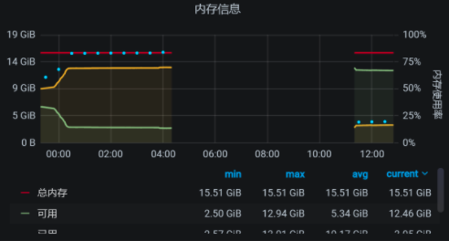
从worker-1的资源上来看，如果worker-1是因为内存用得多被杀掉，那应该在12点20分到12点30分之间就被杀掉了，因为上面的内存曲线在12点半左右之后就没有大的波动了。
可是，为什么要等到凌晨4点20分呢？这说明worker-1被杀掉，并不是因为worker-1上的内存使用突然增加。而是宿主机上的内存使用变多，进而内存不足，然后在计算了OOM评分之后杀掉了worker-1。那我们就到宿主机上，看看还有哪些虚拟机在运行：
[root@hp-server log]# virsh list --all
Id 名称 状态
----------------------------------------------------
1 vm-k8s-master-1 running
2 vm-k8s-master-3 running
4 vm-k8s-worker-2 running
5 vm-k8s-worker-3 running
6 vm-k8s-worker-4 running
7 vm-k8s-worker-1 running
宿主机上总共运行了6个虚拟机，它们在12点半之后的时间里，对应的内存依次如下：
vm-k8s-worker-2：
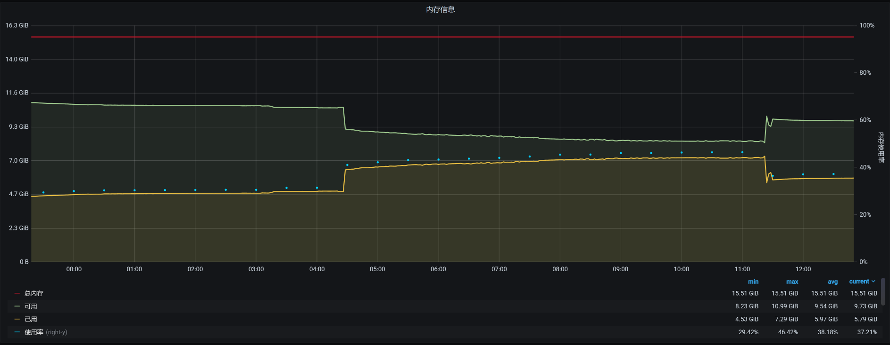
vm-k8s-worker-3：
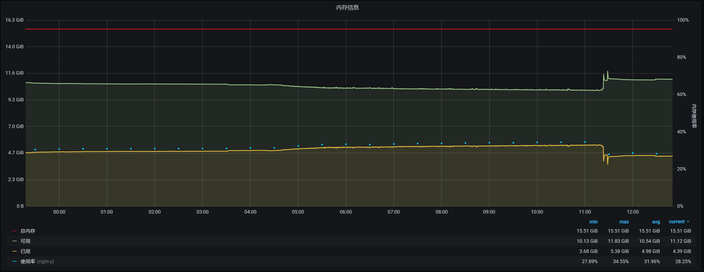
vm-k8s-worker-4：
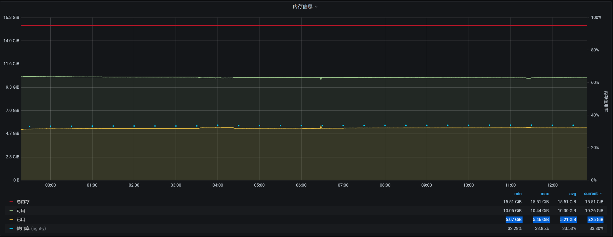
vm-k8s-master-1：
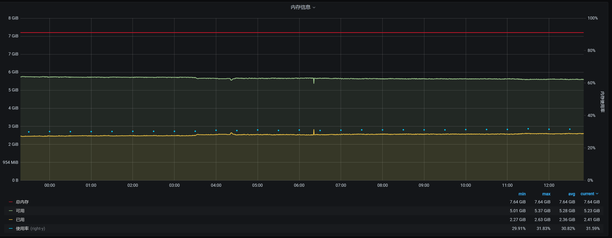
vm-k8s-master-3：
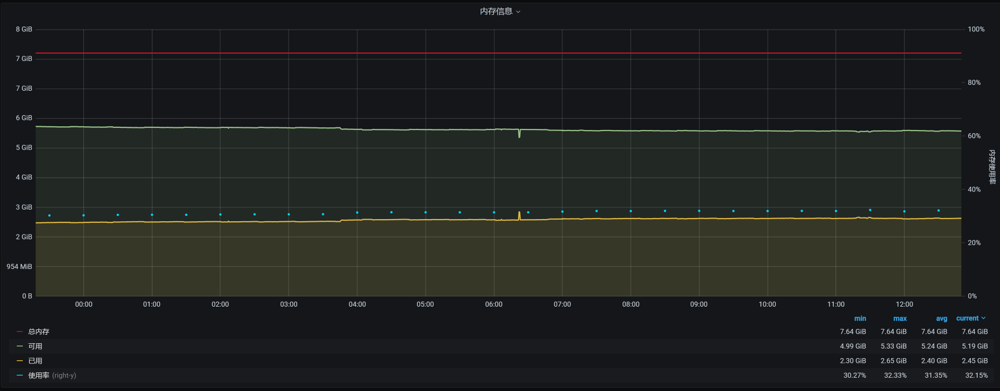
看到了没有？4点多的时候，在worker-2上有一个内存较大的请求。
针对这种情况，如果我们要细细地分析下去，接下来应该分析这个内存请求是从哪来的。但是，在稳定性场景中，要做这样的分析是比较麻烦的。因为这个场景的运行时间长，并且业务众多，不容易拆分时间。因此，我建议你到基准场景中去做分析。
现在，我们不能断言这个内存请求不合理，我们要做的是让这个系统稳定运行下去。所以，我们先来解决问题。
你可能会有疑问：既然是worker-2请求了内存，为啥要把worker-1杀掉呢？这就需要了解Linux的OOM killer机制了。
在OOM killer机制中，不是说谁用的内存大就会杀谁（当然，如果谁用的内存大，被杀的可能性也会比较大），而是会经过计算评分，哪个进程评分高就杀哪个。
在每个进程中，都会有三个参数：oom_adj、oom_score、oom_score_adj，系统的评分结果就记录在oom_score中。其他两个是调节参数：oom_adj是一个旧的调节参数，为了系统的兼容性，被保留了下来；oom_score_adj是一个新的调节参数，Linux会根据进程的运行参数来判断调节参数为多少。
这里提到的运行参数主要是这几个：
- 运行时长（存活时间越长的进程，越不容易被杀掉）
- CPU时间消耗（CPU消耗越大的进程，越容易被干掉）
- 内存消耗（内存消耗越大的进程，越容易被干掉）
这些参数组合在一起，决定了哪个进程要被干掉。
而在我们这个场景中是worker-1被干掉了，这就说明worker-1的评分是高的。
因为前面有worker-1上的内存消耗也比较大，所以，我们在worker-1、worker-2这两台机器上查一下有多少Pod：
[root@k8s-master-1 ~]# kubectl get pods -o wide --all-namespaces| grep worker-2
default cloud-nacos-registry-76845b5cfb-bnj76 1/1 Running 0 9h 10.100.140.8 k8s-worker-2 <none> <none>
default sample-webapp-755fq 0/1 ImagePullBackOff 0 19h 10.100.140.7 k8s-worker-2 <none> <none>
default skywalking-es-init-4w44r 0/1 Completed 0 15h 10.100.140.11 k8s-worker-2 <none> <none>
default skywalking-ui-7d7754576b-nj7sf 1/1 Running 0 9h 10.100.140.14 k8s-worker-2 <none> <none>
default svc-mall-auth-6ccf9fd7c9-qh7j8 1/1 Running 0 151m 10.100.140.21 k8s-worker-2 <none> <none>
default svc-mall-auth-6ccf9fd7c9-sblzx 1/1 Running 0 151m 10.100.140.23 k8s-worker-2 <none> <none>
default svc-mall-member-df566595c-9zq9k 1/1 Running 0 151m 10.100.140.19 k8s-worker-2 <none> <none>
default svc-mall-member-df566595c-dmj67 1/1 Running 0 151m 10.100.140.22 k8s-worker-2 <none> <none>
kube-system calico-node-pwsqt 1/1 Running 8 37d 172.16.106.149 k8s-worker-2 <none> <none>
kube-system kube-proxy-l8xf9 1/1 Running 15 85d 172.16.106.149 k8s-worker-2 <none> <none>
monitoring node-exporter-wcsj7 2/2 Running 18 42d 172.16.106.149 k8s-worker-2 <none> <none>
nginx-ingress nginx-ingress-7jjv2 1/1 Running 0 18h 10.100.140.62 k8s-worker-2 <none> <none>
[root@k8s-master-1 ~]# kubectl get pods -o wide --all-namespaces| grep worker-1
default mysql-min-c4f8d4599-fxwf4 1/1 Running 0 9h 10.100.230.9 k8s-worker-1 <none> <none>
kube-system calico-node-tmpfl 1/1 Running 8 37d 172.16.106.130 k8s-worker-1 <none> <none>
kube-system kube-proxy-fr22f 1/1 Running 13 85d 172.16.106.130 k8s-worker-1 <none> <none>
monitoring alertmanager-main-0 2/2 Running 0 162m 10.100.230.12 k8s-worker-1 <none> <none>
monitoring node-exporter-222c5 2/2 Running 10 7d 172.16.106.130 k8s-worker-1 <none> <none>
nginx-ingress nginx-ingress-pjrkw 1/1 Running 1 18h 10.100.230.10 k8s-worker-1 <none> <none>
[root@k8s-master-1 ~]#
我们进一步查看那些应用经常使用的Pod，看看它们的内存情况如何：
PID USER PR NI VIRT RES SHR S %CPU %MEM TIME+ COMMAND
7609 27 20 0 12.4g 7.0g 12896 S 118.9 45.0 167:38.02 /opt/rh/rh-mysql57/root/usr/libexec/mysqld --defaults-file=/etc/my.cnf
通过查看worker-1上的进程，我们发现主要是MySQL使用的内存最多，这是吃内存的大户。如果宿主机内存不够，把worker-1杀掉确实是有可能的。
下面，我们增加几个临时的监控，把一些重要服务的内存记录一下，比如Gateway、Member、MySQL、Redis等。然后再恢复所有的应用，把场景跑起来，看看是什么样的结果：

运行时长已经快有七个小时了。你可能会奇怪，为什么上一个场景只运行了4个多小时，而现在却能运行7个小时了呢？这是因为worker-1被杀了之后，虚拟机重启了，状态都重置了。
而在上次的场景运行之前，我们并没有重启过虚拟机，也就是说前面已经有了一段时间的内存消耗。对于稳定性场景来说，增删改查都是有的，数据量也在不断增加，所以内存会使用得越来越多。
这一次运行的累积业务量是3200多万：
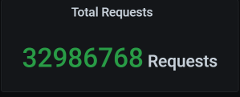
但是，问题还是出现了：通过查看宿主机的日志，我看到worker-2又被杀掉了：
Feb 20 19:42:44 hp-server kernel: Out of memory: Kill process 7603 (qemu-kvm) score 257 or sacrifice child
Feb 20 19:42:44 hp-server kernel: Killed process 7603 (qemu-kvm), UID 107, total-vm:17798976kB, anon-rss:16870472kB, file-rss:0kB, shmem-rss:16kB
Feb 20 19:42:46 hp-server kernel: br0: port 5(vnet3) entered disabled state
Feb 20 19:42:46 hp-server kernel: device vnet3 left promiscuous mode
Feb 20 19:42:46 hp-server kernel: br0: port 5(vnet3) entered disabled state
Feb 20 19:42:46 hp-server systemd-machined: Machine qemu-4-vm-k8s-worker-2 terminated.
Feb 20 19:42:46 hp-server avahi-daemon[953]: Withdrawing address record for fe80::fc54:ff:fe5e:dded on vnet3.
Feb 20 19:42:46 hp-server avahi-daemon[953]: Withdrawing workstation service for vnet3.
[root@hp-server log]#
也就是说，在内存不够的情况下，杀掉哪个worker并不是固定的。至少这可以说明，宿主机真的是因为自己的内存不够用而杀掉虚拟机的。这可能就和具体的组件无关了，因为组件的内存消耗是根据运行需求来的，是合理的。
为什么做这样的判断呢？因为如果是某个固定的worker被杀掉，那我们可以去监控这个worker上运行的技术组件，看看是哪个组件的内存增加得快，然后进一步判断这个技术组件的内存不断增加的原因。
可是现在被杀掉的worker并不是固定的。根据OOM的逻辑，宿主机操作系统在内存不够用的时候才会调用OOM killer。我们前面也提到，overcommit的参数设置是1，也就是说宿主机操作系统允许内存在请求时超分。
但是，在宿主机真正使用内存的时候，内存不够用了，进而导致虚拟机被杀掉。这意味着，在宿主机创建KVM虚拟机时，产生了超分但并没有提供足够的可用内存，而在压力持续的过程中，虚拟机又确实需要这些内存。所以，虚拟机不断向宿主机申请内存，可宿主机没有足够的内存，因而触发了OOM killer机制。
这样看来，我们就得算一下内存到底超分了多少，看看是不是因为我们配置的超分过大，导致了这个问题。我们把虚拟机的内存列出来看看：
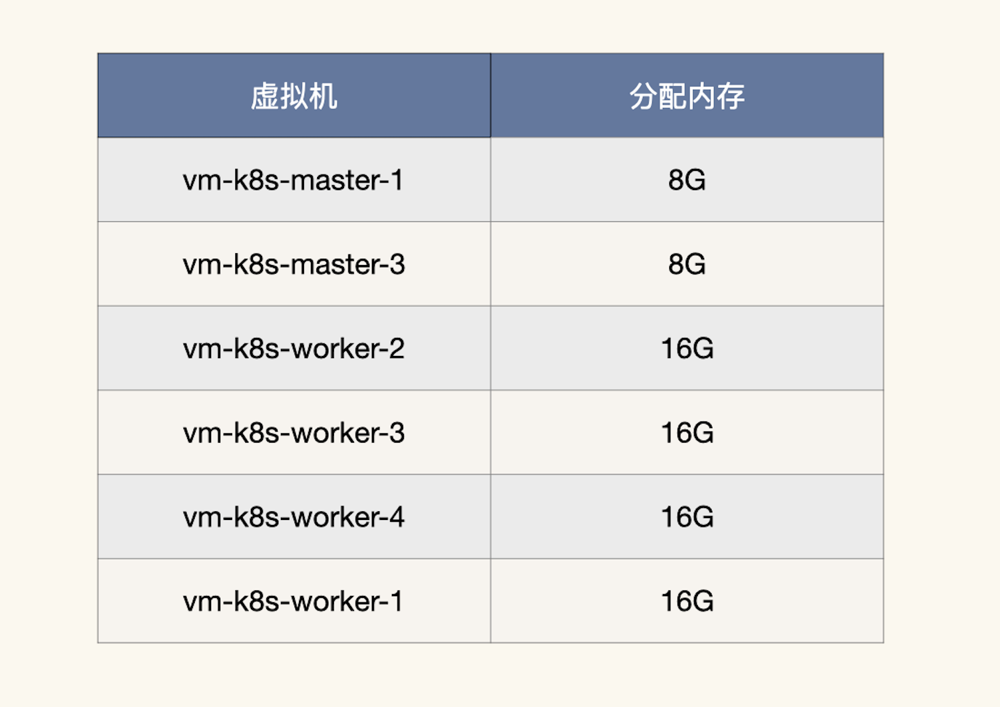
我们计算一下总分配内存：
\[ 总分配内存 = 8 \\times 2 + 16 \\times 4 = 80G \]
而宿主机的物理内存只有：
[root@hp-server log]# cat /proc/meminfo|grep Total
MemTotal: 65675952 kB
SwapTotal: 0 kB
VmallocTotal: 34359738367 kB
CmaTotal: 0 kB
HugePages_Total: 0
[root@hp-server log]#
也就是说宿主机的最大物理内存也只有65G左右。这也难怪，物理内存在真实使用时会不够用。
现在我们把虚拟机的内存降下来，让它不会产生超分，配置如下：
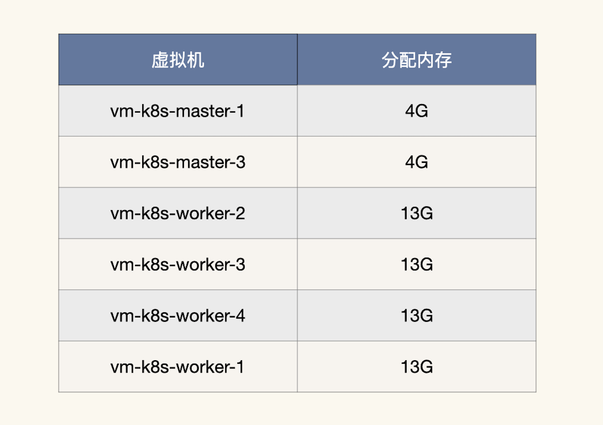
总分配内存计算下来就是：
\[ 总分配内存 = 4 \\times 2 + 13 \\times 4 = 60G \]
这样就足够用了。
不过，根据性能分析中，时间和空间相互转换的原则，这样可能会导致TPS降低。因为在虚拟机的操作系统内存减少时，会更早地出现page faults，也就是页错误（换页时会产生）。不过，如果只是换页，而不是出现OOM，至少不会导致虚拟机被杀掉。
我们再把场景跑起来，看看结果：
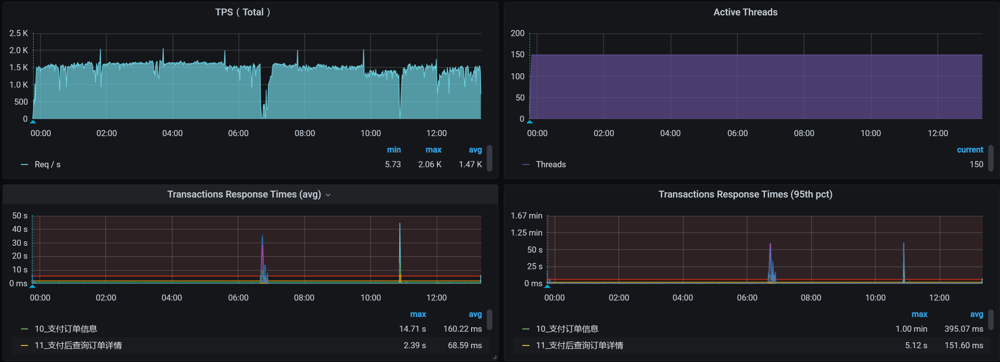
这个结果看起来不错，虽说TPS有掉下来的时候，但是总体上是稳定的。运行时间也超过了12小时。
我们再来看累积业务量：
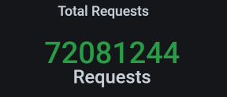
这次的累积业务量超过了7200万，超过了我们定的5000万的小目标。现在是不是可以欢呼一下了？
别高兴太早，在下节课中，你会感受到性能项目中的大起大落。
总结
今天我们讲了稳定性场景的两个要点，分别是运行时长和压力量级。要想把稳定性场景做得有意义，这两点是必备前提条件。
同时，你要记住一点，稳定性场景是为了找出业务积累的过程中出现的问题。所以，如果业务积累量不能达到线上的要求，就不能说明稳定性场景做得有意义。
此外，在这节课中，我们也分析了物理内存增加的问题。在内存的使用上，特别是在这种Kubernetes+Docker的架构中，资源分配是非常关键的。不要觉得Kubernetes给我们做了很多自动的分配工作，我们就可以喝咖啡了。你会发现，仍然有不少新坑在等着我们。
课后作业
这就是今天的全部内容，最后给你留两个思考题吧：
- 在你的项目中，怎么将这节课的稳定性理念落地？
- 在查找稳定性的问题时，如何设计监控策略，才能保证我们可以收集到足够的分析数据？在你的项目中是如何做的？
记得在留言区和我讨论、交流你的想法，每一次思考都会让你更进一步。
如果这节课让你有所收获，也欢迎你分享给你的朋友，共同学习进步。我们下一讲再见！
© 2019 - 2023 Liangliang Lee. Powered by gin and hexo-theme-book.